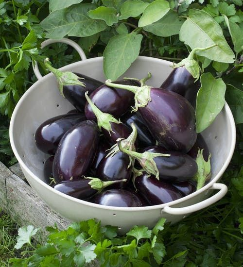

Brinjal (Eggplant) Cultivation Guide

1. Land Preparation
Plough the field thoroughly and add 10–15 tons of FYM per acre.
Create ridges and furrows spaced 60 cm apart.
Ensure good drainage to prevent root diseases.
2. Seed Selection & Sowing
Select high-yielding varieties such as Arka Nidhi, Pusa Purple Long, or local hybrids.
Seed rate: 200–300 g per acre.
Raise seedlings in a nursery bed and transplant after 25–30 days.
Spacing: 60 cm × 45 cm.
3. Water Management
Irrigate immediately after transplanting.
Follow irrigation every 7–10 days depending on weather and soil moisture.
Avoid over-irrigation to prevent fungal diseases.
4. Fertilization Schedule
Basal dose: 30 kg Nitrogen, 40 kg Phosphorus, 20 kg Potash per acre.
Top dressing: Apply remaining nitrogen in 2–3 splits after flowering.
Use micronutrients if deficiencies are observed (e.g., Zinc, Boron).
5. Weed & Pest Management
Manual weeding 2–3 times or use mulching to control weeds.
Common pests: Shoot and fruit borer — manage with pheromone traps or safe insecticides.
Diseases: Bacterial wilt, blight — rotate crops and use disease-resistant varieties.
6. Investment Breakdown (Per Acre)
Input
Estimated Cost (INR)
Seeds
₹1,000 – ₹1,500
Fertilizers
₹2,000 – ₹3,000
Pesticides
₹1,500 – ₹2,500
Labor
₹6,000 – ₹10,000
Irrigation
₹1,500 – ₹2,500
Total Investment
₹12,000 – ₹19,500 per acre
7. Harvesting & Yield
First harvest starts around 60–70 days after transplanting.
Continue harvesting at 7–10 day intervals.
Yield: 80–120 quintals per acre depending on variety and management.
8. Market Rate & Profit Estimation
Average market price: ₹1,000 – ₹2,000 per quintal.
Gross returns: ₹80,000 – ₹2,40,000 per acre.
Net profit: ₹60,000 – ₹2,20,000 per acre.